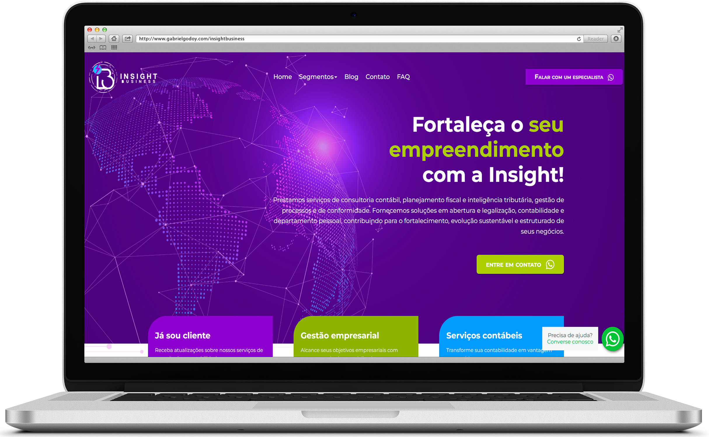
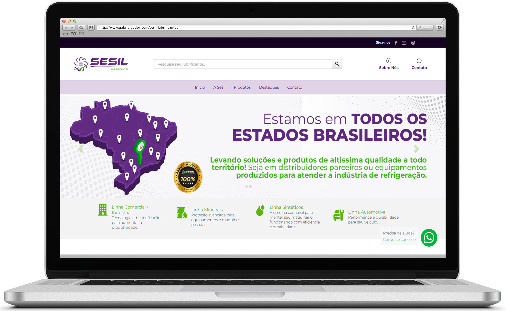
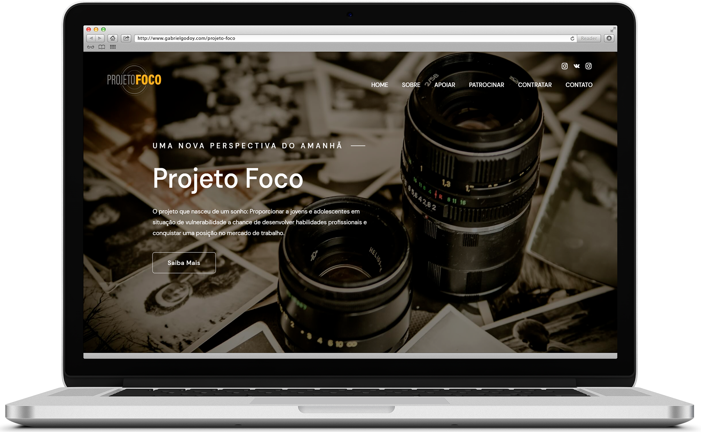
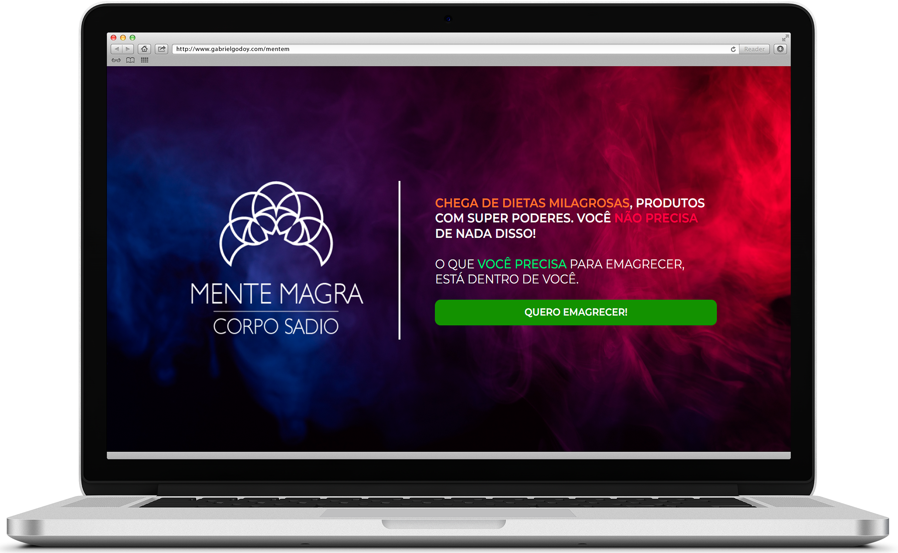
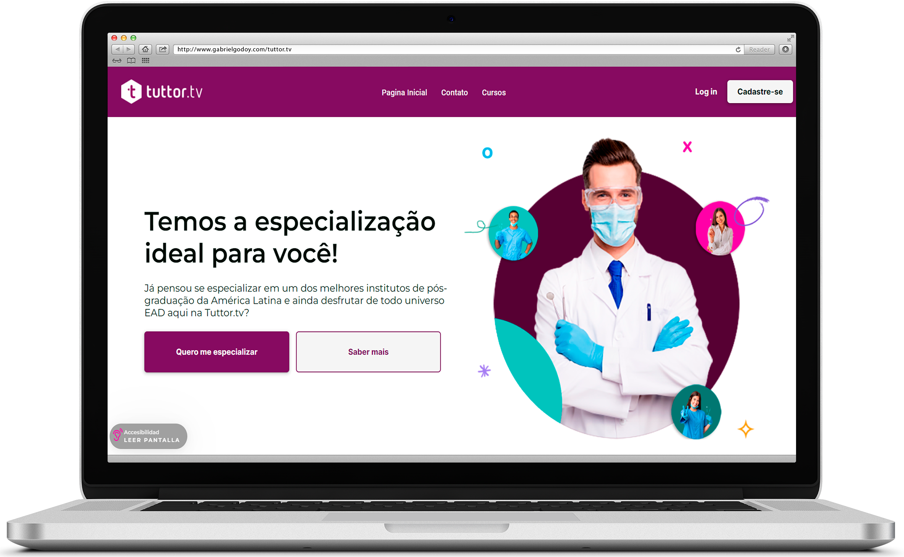
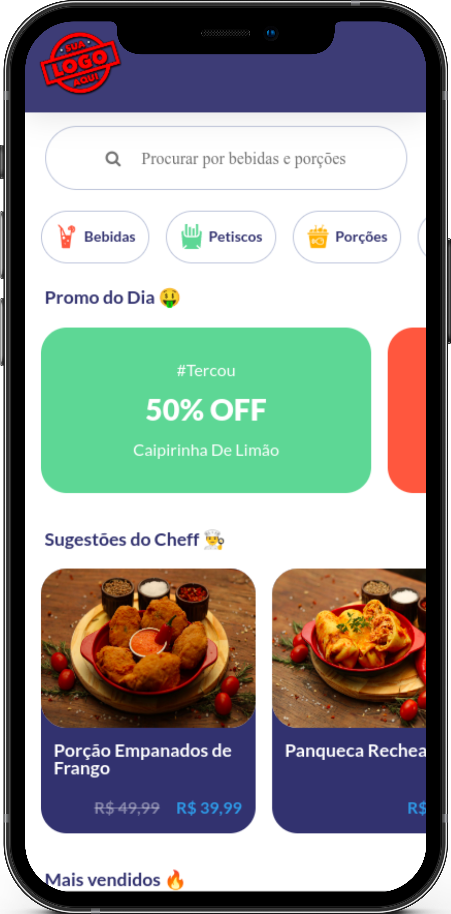

GABRIEL
GODOY
I love creating, designing, and developing beautiful applications and games!
front-end developer
HTML - SASS - JavaScript

About me

About me
I am a passionate Front-end Developer and Web Designer who loves what I do. I work with HTML5, CSS3, SASS,
JavaScript, TypeScript, and GIT in web development, and I am also skilled in design tools such as Photoshop,
Figma, Illustrator, Canva, and Microsoft Designer.
I enjoy creating amazing solutions, focusing on usability, stylish layouts, and clean, efficient code. I
have experience with responsive design and projects involving API consumption, which you can see in my
portfolio.
Curious by nature, I like to learn new things and am proactive. I work well in teams, speak fluent English,
and am always ready to travel or relocate if necessary. My experience as a teacher has helped me develop
important skills such as a sense of urgency and discipline, making me a professional prepared to face
challenges and seek innovative solutions.
Oh, and I'm also always keeping an eye on artificial intelligence and how it can help me be even more
efficient and productive in the world of development and design.
PORTFOLIO
Responsive Websites

Insight Business - Institucional Website
Focus on SEO! Insight Business is an accounting and financial and business consulting agency that operates exclusively online. In this project, I worked end-to-end, from the briefing to the design and implementation. Given the importance of online presence, I focused on indexing, SEO, and accuracy of the page to ensure visibility and easy access to the services offered.

Sesil Lubrificantes - Virtual Catalogue
Lubricate! Sesil Lubricants is a virtual catalogue for an international lubricating oil company. I worked end-to-end on the project, from the briefing to design and implementation. I used the 2RS CMS system to develop an efficient and easy-to-navigate platform, allowing users from around the world to explore and find products with ease.

Projeto Foco - Landing Page
Say
Cheese! Project Focus is a charity website developed for an educational institution dedicated to teaching photography to underprivileged teenagers. Using Mobirise technology, I created an attractive and accessible platform, highlighting the positive impact of the activities offered by the institution.

Mente Magra - Sales Page
Lean Mind, Healthy Body! Lean Mind is a sales landing page I developed end-to-end, from the client briefing to design and implementation. Designed to redirect users to the Hotmart page, the platform focuses on sales efficiency. Currently, the website is undergoing maintenance for improvements.

Tuttor.tv - Video Repository
Video Lessons! Tuttor.TV is the educational video repository of the Imondelli Institute, where I worked as a designer with a focus on mobile experience. Inspired by leading video lesson repositories, such as Alura, I collaborated in creating a user-friendly and intuitive platform to optimize users' learning experience.
Mobile Only

Digital Menu
Want to place your order?! Focusing on the bar and restaurant market, I developed this virtual menu which, thanks to its dynamic and elegant layout, not only delivers an excellent user experience but also brings effectiveness and more accurate sales to the establishment.

MSN - Messenger
What if MSN came back? In partnership with Guilherme Feitosa, I developed a reimagining of 'MSN - Messenger',
using HTML, CSS, and JavaScript, where you can chat in real-time with other registered users.
Games

Ukraine Soldier
How about
supporting Ukraine? I developed this 2D platform 'free-to-play' game, based on the
classic 'Mario 2D', where you play as a Ukrainian soldier who needs to eliminate Russian soldiers. Upon completion, you will receive a summary of the current situation in Ukraine and information on how you can help refugees, such as access to official donations.

Typing Game
Are you
fast at typing? This is a web-based game, developed for desktop, using JavaScript
to challenge myself using loops, DOM manipulation, and localStorage.

rovani's weed game
Can you
help Rovani catch the herb? This is an Atari-based game that I developed
using the JavaScript canvas library as a birthday gift for a dear friend.
Insight Business - Institucional Website
Focus on SEO! Insight Business is an accounting and financial and business consulting agency that operates exclusively online. In this project, I worked end-to-end, from the briefing to the design and implementation. Given the importance of online presence, I focused on indexing, SEO, and accuracy of the page to ensure visibility and easy access to the services offered.
Sesil Lubrificantes - Virtual Catalogue
Lubricate! Sesil Lubricants is a virtual catalogue for an international lubricating oil company. I worked end-to-end on the project, from the briefing to design and implementation. I used the 2RS CMS system to develop an efficient and easy-to-navigate platform, allowing users from around the world to explore and find products with ease.
Projeto Foco - Landing Page
Say Cheese! Project Focus is a charity website developed for an educational institution dedicated to teaching photography to underprivileged teenagers. Using Mobirise technology, I created an attractive and accessible platform, highlighting the positive impact of the activities offered by the institution.
Mente Magra - Sales Page
Lean Mind, Healthy Body! Lean Mind is a sales landing page I developed end-to-end, from the client briefing to design and implementation. Designed to redirect users to the Hotmart page, the platform focuses on sales efficiency. Currently, the website is undergoing maintenance for improvements.
Tuttor.tv - Video Repository
Video Lessons! Tuttor.TV is the educational video repository of the Imondelli Institute, where I worked as a designer with a focus on mobile experience. Inspired by leading video lesson repositories, such as Alura, I collaborated in creating a user-friendly and intuitive platform to optimize users' learning experience.
Digital Menu
Want to place your order?! Focusing on the bar and restaurant market, I developed this virtual menu which, thanks to its dynamic and elegant layout, not only delivers an excellent user experience but also brings effectiveness and more accurate sales to the establishment.
MSN - Messenger
What if MSN came back? In partnership with Guilherme Feitosa, I developed a reimagining of 'MSN - Messenger', using HTML, CSS, and JavaScript, where you can chat in real-time with other registered users.
Games
Ukraine Soldier
How about
supporting Ukraine? I developed this 2D platform 'free-to-play' game, based on the
classic 'Mario 2D', where you play as a Ukrainian soldier who needs to eliminate Russian soldiers. Upon completion, you will receive a summary of the current situation in Ukraine and information on how you can help refugees, such as access to official donations.
Typing Game
Are you
fast at typing? This is a web-based game, developed for desktop, using JavaScript
to challenge myself using loops, DOM manipulation, and localStorage.
rovani's weed game
Can you
help Rovani catch the herb? This is an Atari-based game that I developed
using the JavaScript canvas library as a birthday gift for a dear friend.
Ukraine Soldier
How about supporting Ukraine? I developed this 2D platform 'free-to-play' game, based on the classic 'Mario 2D', where you play as a Ukrainian soldier who needs to eliminate Russian soldiers. Upon completion, you will receive a summary of the current situation in Ukraine and information on how you can help refugees, such as access to official donations.
Typing Game
Are you fast at typing? This is a web-based game, developed for desktop, using JavaScript to challenge myself using loops, DOM manipulation, and localStorage.
rovani's weed game
Can you help Rovani catch the herb? This is an Atari-based game that I developed using the JavaScript canvas library as a birthday gift for a dear friend.
Let's work together?